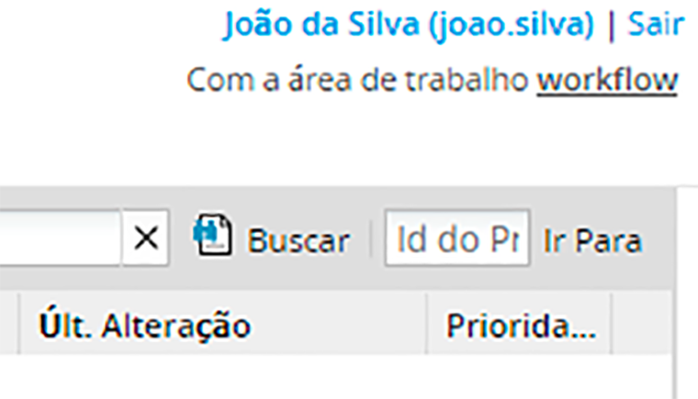

Acesse o Gestor Express por meio de um subdomínio:
Siga estas diretrizes para fazer logon no Gestor Express por meio do Sub Domínio:
Insira o do Sub Domínio da instância que hospeda o Gestor Express em um navegador Web padrão.
http://subdominio.gestorexpress.com.br
Por exemplo, se o nome fantasia de sua empresa for SkyLab S.A, e atribuirmos um subdominio com o nome de sua organização, digite:
http://skylab.gestorexpress.com.br
Com esse endereço digitado na URL de um navegador web qualquer, o navegador te redirecionará automaticamente para a tela de logon do Gestor Express em:
Para acessar as configurações de logon, vá para ADMIN => Configurações => Login . A tela Configurações de login é exibida.
Definir o idioma padrão na tela de logon
Use a opção Idioma padrão para selecionar o idioma padrão exibido na tela de logon. O Gestor Express está disponível por padrão apenas em inglês, mas arquivos de tradução para idiomas adicionais podem ser instalados. Essa configuração deve ser definida para cada área de trabalho.
Para definir o idioma padrão exibido na tela de logon de um espaço de trabalho, siga estas etapas:
Acesse as configurações de Login.
Faça uma das seguintes opções:
Selecione o idioma padrão para esse espaço de trabalho na lista suspensa Idioma padrão .
Selecione Usar o idioma da URL para permitir que a configuração de idioma na URL de logon especifique a configuração de idioma padrão. Por exemplo, o URL de logon contém “en” para o idioma inglês ou “es” para o idioma espanhol.
Clique em Salvar configurações.
Ativar recuperação de senha
Ao habilitar esta opção, se um usuário esquecer a senha para fazer logon no Gestor Express, um link será exibido na tela de logon para enviar uma nova senha gerada aleatoriamente para a conta de e-mail desse usuário. Essa senha aleatória permite que o usuário crie uma nova senha.
Para permitir que os usuários obtenham novas senhas, marque a opção Ativar Recuperação de Senha e clique em Salvar configurações .
Altere o destino padrão após o logon
Após o login, os usuários com as funções Operaador e Supervisor são direcionados por padrão ao menu Início para exibir uma tarefas de processos do usuário localizada no endereço:
Os usuários com a função Administrador ou a permissão PM_FACTORY em sua função são direcionados por padrão ao menu Modelagem após o login, localizado no endereço:
Cada usuário que tem a permissão PM_EDITPERSONALINFO em sua função pode personalizar para onde o Gestor Express direciona o navegador da web após o logon. Após o login, clique no nome de usuário entre parênteses no canto superior direito para ver o perfil do usuário.

Em seguida, clique em Editar no canto inferior direito para alterar esse perfil.
Na seção Preferências, selecione qual menu deve ser o menu padrão na caixa suspensa Opção padrão do menu principal. No menu Início, a lista de casos na Caixa de entrada é exibida por padrão. Para alterar qual opção é selecionada por padrão na barra lateral Casos, selecione na caixa suspensa Opção de Menu de Processos Padrão.